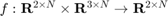

create_uni_barrier_certificate
Returns a barrier certificate () that operates on unicycle algorithms, preventing colisions.
Contents
Detailed Description
- BarrierGain - affects how quickly the robots can approach each other
- SafetyRadius affects how far apart the robots must be
- ProjectionDistance affects the utilized transformation to single-integrator dynamics
A good rule of thumb is to make the safety radius and projection distance each 1/2 of the desired total distance for the agents to remain apart. You'll want their total to be more than the diameter of the GRITSbot (i.e., 0.08 m).
Example usage
uni_barrier_cert = CREATE_UNI_BARRIER_CERTIFICATE('BarrierGain', 3, 'SafetyRadius', 0.05, 'ProjectionDistance', 0.05) dxu_safe = uni_barrier_cert(dxu, robot_poses)
Implementation
function [ uni_barrier_certificate ] = create_uni_barrier_certificate(varargin) parser = inputParser; addOptional(parser, 'BarrierGain', 3); addOptional(parser, 'SafetyRadius', 0.05); addOptional(parser, 'ProjectionDistance', 0.05); parse(parser, varargin{:}) opts = optimoptions(@quadprog,'Display','off'); gamma = parser.Results.BarrierGain; safety_radius = parser.Results.SafetyRadius; projection_distance = parser.Results.ProjectionDistance; [si_uni_dyn, uni_si_states] = create_si_to_uni_mapping('ProjectionDistance', projection_distance); uni_si_dyn = create_uni_to_si_mapping('ProjectionDistance', projection_distance); uni_barrier_certificate = @barrier_unicycle; function [ dxu ] = barrier_unicycle(dxu, x) N = size(dxu, 2); %Shift to single integrator domain xi = uni_si_states(x); dxi = uni_si_dyn(dxu, x); %Generate constraints for barrier certificates based on the size of %the safety radius num_constraints = nchoosek(N, 2); A = zeros(num_constraints, 2*N); b = zeros(num_constraints, 1); count = 1; for i = 1:(N-1) for j = (i+1):N h = norm(xi(:,i)-xi(:,j))^2-(safety_radius + 2*projection_distance)^2; A(count, (2*i-1):(2*i)) = 2*(xi(:,i)-xi(:,j))'; A(count, (2*j-1):(2*j)) = -2*(xi(:,i)-xi(:,j))'; b(count) = -gamma*h; count = count + 1; end end A = -A; b = -b; %Solve QP program generated earlier vhat = reshape(dxi,2*N,1); H = 2*eye(2*N); f = -2*vhat; vnew = quadprog(H, double(f), A, b, [], [], [], [], [], opts); %Set robot velocities to new velocities dxu = si_uni_dyn(reshape(vnew, 2, N), x); end end